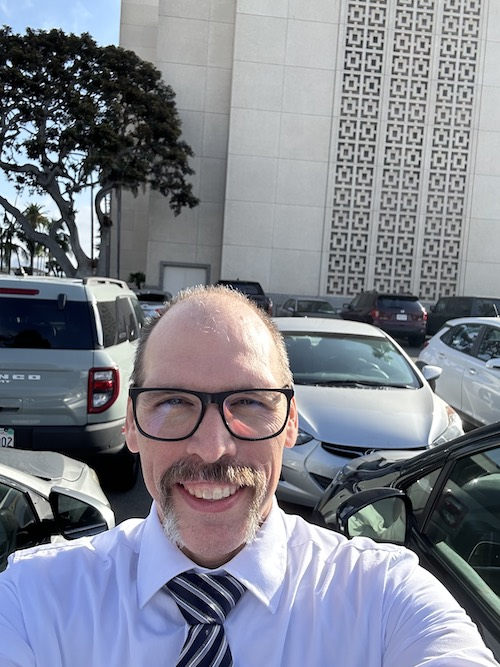

Eric Outen | WDD 130

Hello, my name is Eric and this is my home page. I live in London, England with my beautiful wife and my favorite food is Pizza. In my spare time I like hiking, cycling, and weightlifting. Before I moved to London, I was living in Santa Barbara California. The weather is very different here, but I love the beautiful museums and architecture, and the public transportation in London makes it really easy to get around.